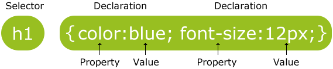

селектори | стилове | класове
Cascading Style Sheets
CSS е съкращение на Cascading Style Sheets. Това е език даващ ни възможност да стилизираме вида HTML страниците. Ако си представим, че HTML е бетона,с който строим Интернет страници, CSS е тяхната декорацията и дизайн.
CSS предоставя множество от удобства при изграждането на HTML страници. Най-голямото удобство при използването на CSS e възможността да контролираме много на брой HTML документи, като това става чрез промяна на един единствен файл, без да е нужно да се променя HTML кода на всяка една уеб страница.
CSS стилизация може да бъде добавена към HTML елементи по три начина:
- Директно (inline) - чрез
styleатрибута на HTML елементите - Вътрешно - чрез
<style>елемент в<head>секцията - Външно - чрез отделен CSS файл
Директно
<h1 style="color:blue;">This is a Blue Heading</h1>
Вътрешно
...
<head>
<style>
body {background-color: powderblue;}
h1 {color: blue;}
p {color: red;}
</style>
</head>
...
Външно
... <head> <link rel="stylesheet" href="styles.css"> </head> ...
CSS синтаксис
Едно CSS правило се състои от селектор и декларационен блок.
Селекторът сочи към HTML елемент, който желаем да стилизираме. По-нататък ще разгледаме какви типове селектори съществуват в езика. Декларационният блок е заграден с къдрави скобки и съдържа една или повече декларации разделени с точка и запетая, тук става магията на стилизирането. Всяка декларация в блока се състои от CSS свойство и стойност, разделени със две точки.
В този пример текста във всички елементи p ще бъде центриран и оцветен в червено:
Основни CSS селектори
CSS селекторите служат за намирате/слектиране на HTML елементи на база тяхното име, id, клас, атрибут и още. В горния пример видяхме как да селектираме елемент използвайки неговото име.
Id селектор
Този селектор използва id атрибута на HTML елементите за да ги намери. id атрибута не трябва да се използва повече от веднъж в рамките на една уеб страница, така селекторът се използва за намирането на уникални елементи! За да селектираме елемент с дадено id пишем диез (#) последван от id-то на елемента.
Клас селектор
Клас селекторът намира елементи по тeхния class атрибут. За да селектираме елементи с даден class пишем точка (.) последванa от името на класа.
Може да ограничим действието на клас стилизацията като посочим и име на елемент. Така класът ще важи само за определения тип елемент.
Наследник
Селектрирането на наследник става чрез посочване на два селектора разделени с интервал. Първият селектор намира родителя, а вторият негов наследник.
Групиране
Можем да използваме един блок за няколко селектора. Това помага да намалим обема на код.
h1 {
text-align: center;
color: red;
}
h2 {
text-align: center;
color: red;
}
p {
text-align: center;
color: red;
}
се свежда до
h1, h2, p {
text-align: center;
color: red;
}
Пряк наследник
С този тип селектор можем да намерим елемент пряк наследник на родителя си или по-просто казано елемент намиращ се директно под родителя си. За да го използваме трябва да добавим символа < между два селектора.
Свойства
Свойствата в CSS могат да се разделят на основни два типа.
- Layout свойства - свързани с позицията и размера на елементите
- Decoration свойства - свързани с външния вид фон, шрифт, цветове и ефекти
Цветове
Цветовете са важна част от стилизацията на уеб страници. В CSS има четири стандартни начина за представяне на цветове:
- Име: red
- RGB: rgb(255, 0, 0)
- HEX: #ff0000
- HSL: hsl(0, 100%, 50%)
Всички модерни браузъри поддържат 140 имена на цветове (Aqua, Blue, Red, Coral, Gold...). Те рядко се ползват тъй като ни ограничават с малкия си брой и могат да се различавам между различните браузъри.
RGB (Red Green Blue) задава стойности на всеки от трите цвята от 0 до 255 в десетичен вид.
HEX е просто по-кратка версия за писане, като се пише '#' и после от 00 до FF за всеки от трите цвята. HEX има и съкратен вариант, където се пише само по 1 шестнайсетична цифра за всеки цвят, и за стойност се взима 17 пъти по-голяма стойност (все едно е била написана 2 пъти). Тоест #c93 = #cc9933, което го прави най-минималистичен и бърз за писане вариант. Както и във истинския свят цветовете са като светлина - тоест по-големите стойности са по-светлите (#fff = white, #000 = black).
CSS Метрки
- Pixels (px): px са фиксирана мерна единица. Всеки екран има точно определен брой пиксели на дадена резолюция.
- Points (pt): pt е мерна единица обикновено използвана при неща за принтиране - тя се използва например за размер на шрифта в word.
- “Ems” (em): em e мерна единица с променлив размер. 1em = конкретния размер на шрифта за дадения елемент. Използването и дава възможност за лесно оразмеряване на целия layout с лекота като просто се смени размера на шрифта. Така лесно се постигат добри резултати за мобилни устройства, както и за по-големи екрани.
- Percent (%): % има различен смисъл за различен контекст. Когато се задава размер на шрифта тя е подобна на em - 100% = 1em = конкретния размер на шрифта. В останалите случаи 100% се пада съответния размер на даден родител, когато размер с проценти въобще е валиден.
Стилизиране на текст
Color
Цветът по подразбиране за страницата се задава с body селекторът.
Text Alignment
Свойството text-align се използва за хоризонтално подравняване на текст. Текстът може да бъде подравнен наляво, надясно, центрирано и оправдано (justified).
Text decoration
Свойството text-decoration се използва за задаване или премахване на текстови декорации. Възможните стойности, които може да приема са none underline overline line-through.
Стойността text-decoration: none; често се използва за премахване на подчертавките от линковете:
И още много...
Шрифт
В тази секция на реферата ще разгледаме CSS свойства свързани с шрифта, дебелината, размера и стила на текста.
-
font-style font-weightfont-sizeline-heightfont-familyfont
CSS Font Family
В CSS има два типа имана на font families:
- generic family - множество от семейства изглеждащи подобно ('Serif' или 'Moospace')
- font family - конкретно семейство ('Times New Roman' или 'Arial')
| Generic family | Font family | Описание |
|---|---|---|
| Serif | Times New Roman
Georgia |
Serif шрифтове имат малки чертички в краищата на някои букви |
| Sans-serif | Arial
Verdana |
"Sans" означава без - това са шрифтове без чертички в края на символите |
| Monospace | Courier New
Lucida Console |
Всички monospace символи имат еднаква ширина |
font-family трябва да съдържа няколко шрифта като "fallback" система. Ако браузърът не поддържа първия шрифт ще пробва следващия, това ще продължи докато не стигне до шрифт който поддържа.
p {
font-family: "Times New Roman", Times, serif;
}
Font Style
Свойството font-style се използва за оказване на италик текст. font-style приема три стойности:
- normal - текста се показа нормално
- italic - текста се показва в италик стил
- oblique - текста се накланя прилича
Списъци
В HTML има два типа списъци:
- ненареден списък (<ul>) - елементие се маркират с булети
- нареден списък (<ol>) - елементите са номерирани с числа
CSS позволява да променяме и стилизираме:
- Начина на маркиране на наредените списъци
- Начина на маркиране на ненаредените списъци
- Фоновия цвят на списъците и фоновия цвят на елементите
Маркери
Свойството list-style-type определя типа маркер на списъка.
Ето и пример:
Позициониране на маркери
list-style-position определя дали маркерите да са вътре или извън съдържанието.
Оцветяване на списъци
Можем да оцветяваме списъците за да ги направим по-интересни.
Всичко добавено към <ul> или <ol> оказва ефект върху целия списък, а свойствата добавени към <li> се отнасят само за индивидуалните елементи.
Ресурси
- https://www.w3schools.com/cssref/css_selectors.asp
- https://www.w3schools.com/css/css_syntax.asp
- https://www.w3schools.com/css/css_text.asp
- https://www.w3schools.com/css/css_font.asp
- https://www.w3schools.com/css/css_list.asp
- http://iliasky.com/www/kn14/05-html-css-1.html
- https://upload.wikimedia.org/wikipedia/commons/thumb/d/d5/CSS3_logo_and_wordmark.svg/726px-CSS3_logo_and_wordmark.svg.png
- https://www.w3schools.com/css/selector.gif
{kind=link}
{kind=link}